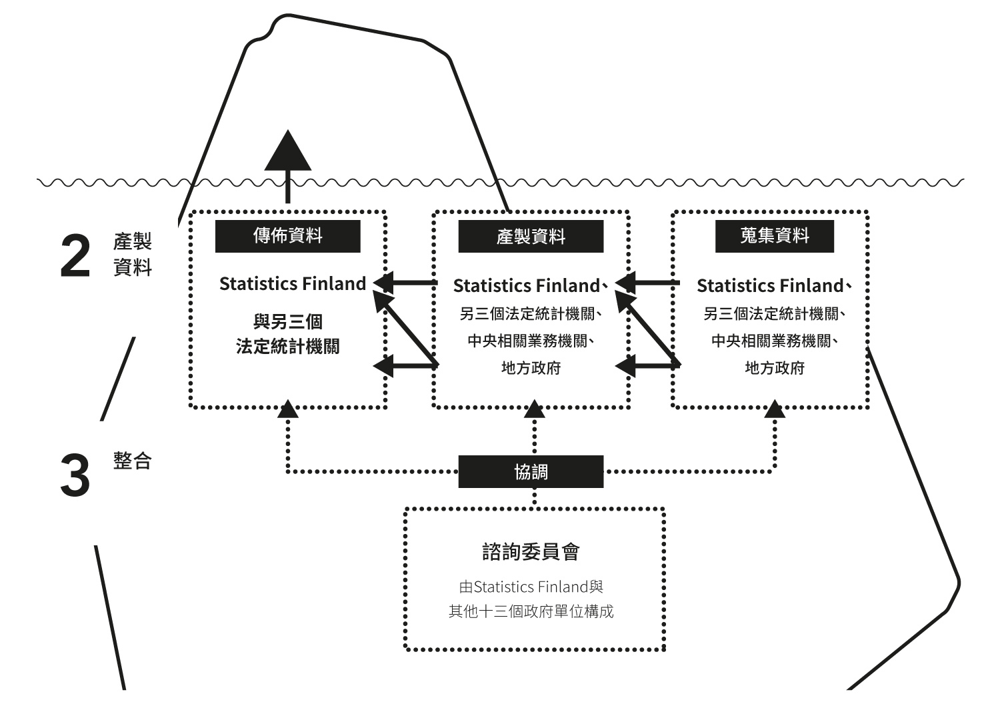
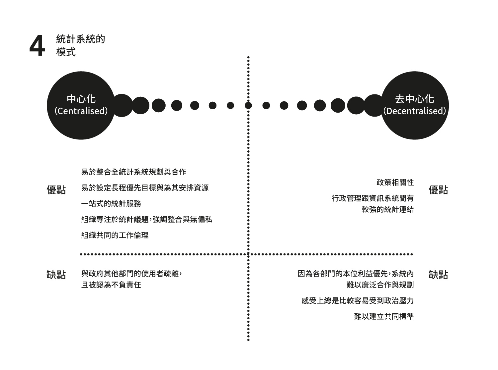
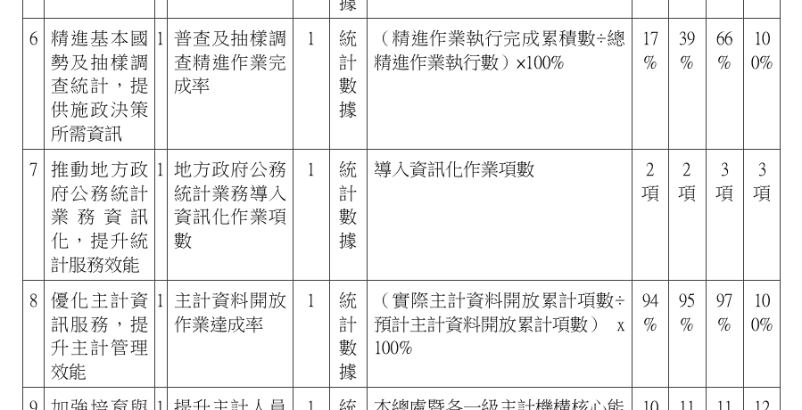

為什麼台灣的官方統計這麼難用？（一）
#aalto/pad #diary
Last year, I went to Kyoto and attended an academic workshop organised by the department of sociology at Kyoto University. The students from National Taiwan University, Seoul National University, and Kyoto University shared their findings from their researches on east asian society with each other. I was impressed by how the students from Japan made use of their national statistical services as their resources for the researches. The Japanese government provides clear and easy-to-use interface on their statistical services. I found that Statistics Finland, the Finnish official statistics agency, also provides some similar services as the counterpart in Japan. That is why I selected it as my topic for the essay of product architecture analysis. I would like to discuss how the architecture of the the official statistical system in Finland and Taiwan. In order to augment my comparison, lots of additional information has been added in the Chinese translation shown below, as the original English edition basically only discuss the system in Finland because of the limitation on word count by the course requirement.
 芬蘭的國家統計網站Statictics Finland https://www.stat.fi/index_en.html
芬蘭的國家統計網站Statictics Finland https://www.stat.fi/index_en.html
這是我在Aalto第二個學期的期末報告，課程是產品架構設計（Product Architecture Design）。原初是是分析芬蘭的官方統計服務，因為英文有相當嚴苛的字數限制，翻回中文之後，我才補進台灣的部分進一步分析。
選這個題目的初心來自去年在京都大學參加一個社會學學術工作坊，除了台大外，有首爾大學跟京都大學的師生帶團參加。當時蠻驚訝日本學生如何使用他們的政府統計系統，而且印象中，他們的統計網站可以自動生成圖表以供使用，十分方便。後來來到芬蘭，我發現官方統計也做得相當好懂。此時令我非常感興趣的是，服務設計背後提供服務的組織本身，如何影響其所設計/提供的服務。
本學期的課程閱讀主要跟產品架構有關，雖然偏向硬體的分析，但設計領域發展至今，已經不限於有形物件，我將其拓展到提供產品的組織。此外，一個我很有興趣的設計領域是參與式設計，本質上它也在討論設計相關的行動者，應該建立的是怎麼樣的關係，而這樣的關係最終影響設計的產出。這與前開組織與架構的討論有呼應之處。
這篇報告目的在分析芬蘭與台灣政府統計機關與其服務架構與組織架構的關聯。我想藉由說明他們怎麼收集、處理跟公開資料，來討論架構的差異，進而指出看不見的架構是如何影響多面的服務產出。我一開始的分析重點偏向整體國家統計體系的中心化與去中心化，然而我發現芬蘭與台灣提供的統計服務體驗與既有理論有所衝突。
芬蘭的統計體系較台灣去中心化，國家統計牽涉14個主要政府部門間的合作。理論上，它提供的統計服務應該會較難整合，進而影響一般使用者的體驗。然而實際上台灣的官方統計服務卻遠較為差而破碎，甚至讓我一開始誤以為台灣的統計體系是非常去中心化的。是以本文最後試圖轉向，討論中心化與去中心化系統外幾個可能的原因，它包含芬蘭公務體系的職位制、預算規模、台灣統計機關未獲得獨立地位等。最後試著導出台灣如果要改善，怎麼樣的方向會是比較可能的。
所以以下分成三個部分：
- 台芬官方統計服務的比較
- 國家統計系統
- 台灣可以改善的方向
限於新的學期就要開始，我必須今天結束這份報告的撰寫。而我在著手這個題目之前，對國家統計這個題目從未涉獵，就手上擁有的資料我無法做出有力的結論。事實上，若能以最後的結論倒敘重新安排文章結構，這篇文章會通暢得多（我還是覺得我找到的這些資料蠻有趣的）。但現在就維持這樣有點類似memo而且口語的形式，當作思路發展的一個紀錄。
台芬官方統計服務的比較
什麼是架構式創新？我在這邊引用 Henderson 與 Clark (1990) 的定義：
「架構式創新的本質就是調整一個既有的系統，把既有元件換個新方式連起來。」
設計圈的人應該不少聽過Roberto Verganti的《設計力創新》。他的理論框架跟這個很像，只是橫軸縱軸倒轉，然後架構的那個軸換成 Meaning。雖然多年前讀，案例看起來是先有理論再找案例，效度要打一個問號......
架構作為一種系統內元件的連結圖式，是如何影響一個系統的最終服務？這是這篇文章要分析的事情，而我打算拿官方統計系統作為分析目標。
由國家統計機關發布的官方統計，一般來說被視為最具權威性的資料來源，可以用以描繪一個國家的樣貌。官方統計的產製與發佈是很複雜的，而最後服務的呈現與體驗與之息息相關。我覺得是很合適的分析對象。
我要簡單的分析芬蘭國家統計機關的服務架構，然後以之與台灣做比較。因為時間跟篇幅都有限，所以我不討論每個細節跟優劣。我只想專注在幾個跟服務結果有關的重要架構特徵，然後，呈現這些關聯，並凸顯架構的重要與改變它所帶來的潛力。
統計系統的架構
官方統計服務例如索取資訊、線上資料庫、官方報告等等，大概都是使用者最熟悉的。只是，藉由冰山的譬喻，這些服務只是看得到的部分，在水下面還有一堆看不見的複雜結構，撐起上面我們知道的那些東西。
靠著把冰山一層層畫出來，我要用它說明系統架構，包含（1）傳達資料 Deliver Data（2）產製資料Produce Data（3）整合 Integration（4）統計系統模式 Model of System國家統計系統的冰山模型
一、傳遞資料：簡單分析芬蘭國家統計服務
在這段我簡單說明一下芬蘭的統計服務有什麼，就是冰山水上面那些大家平常會接觸的東西，之後再拿一些跟台灣相異的部分對照。
在芬蘭，所有國家統計服務，都被整合到一個單一入口網站 Tilastokeskus，由他們的國家統計機構 Statistics Finland 開發跟管理。我簡單把所有的服務歸納在下面這張圖：
 圖上面左邊這邊是主要的服務，右邊是他們各自的子項目內容。
圖上面左邊這邊是主要的服務，右邊是他們各自的子項目內容。
- 線上統計資料庫
首先是線上統計資料庫，都在一個入口網站上了。 Statistics Finland 給每個新發布與有更新的資料集，都做了類似新聞稿的簡單介紹，同時提供清楚好懂總結式的圖表。
資料集英文譯名為 Statfin，使用稱為 PX-Web (PX-Web - Select table) 的互動介面，這是由瑞典政府開發的，基於 SQL 資料庫技術的網路程式，在2015年免費開放。目前有將近20國/國際組織使用，芬蘭亦直接沿用之。
使用者首先選取資料集，接著選取想要的變項。
最後網站會自動產生相關的圖表（視資料內容呈現直方圖、折線圖、純表格……等。）給使用者，並且提供多種格式的下載選項（csv, xlsx, json, px 等）。
如果你對 PX-Web 資料集細節沒興趣，只想按主題瀏覽整理好的報告，還有專門放上述這些介紹跟報告的網站 Findicator Findicator.fi - Statistical information about Finland。
- 資訊服務
接下來是資訊服務， 如果公眾想要特定資料，或對統計有任何疑問，可以直接前往 Statistics 的服務台、電洽、或填寫線上表單索取/詢問。如果是既有簡單的內容，可以免費； 如果資料需要特別編譯、或特別龐大，則需要支付一定費用，但公務機關和學術單位免費。針對研究者，他們提供一個完整的清單，表列 所有可以藉由資訊服務索取的資料（https://taika.stat.fi/en/index） 。他們也有對公眾開放的統計圖書館跟供租借的電腦間。所有的資料都受到個人資料法的保護。
諮詢服務
Statistics Finland 同時也提供面向研究的諮詢服務。他們很自信地在網站上這樣宣稱：「Statistics Finland 的訪談與調查服務專業是芬蘭最頂尖的。」，並針對來自公私部門的研究單位，提供收費諮詢服務，例如問卷設計與測試、採樣、調查、訪談。教育課程
Statistics Finland 也提供公共教育課程，有線上也有線下的。線上課程主要是統計與研究方法的基本素養，也有主題式課程例如勞動、人口等，甚至有芬蘭統計史的課程。線上課程是文圖互動介面，視情況小節尾端會提供案例與隨堂測驗；線下課程則非常具有主題性，有的還跟上時事，譬如「另類真實與事實」、「消費趨勢」、「勞動市場」等，從主題切入，介紹如何運用統計工具跟取得相關資料。
](5.png) 此圖截自課程網頁，使用google translate翻譯：[Tilastokoulu](http://tilastokoulu.stat.fi/verkkokoulu_v2.xql)
此圖截自課程網頁，使用google translate翻譯：[Tilastokoulu](http://tilastokoulu.stat.fi/verkkokoulu_v2.xql)
- 官方統計報告
最後是官方統計報告的發布，也是透過 Statistics Finland 的網站公開。包含各種主題，譬如社會、經濟、環境的發展。同樣的，提供每年芬蘭國情概覽的國家統計年報也可以在此找到。
小結：芬蘭的線上統計服務相當清晰，儘管或許因為有四個統計主管機關，因此某些特定統計會外連到別的網站（例如芬蘭自然資源研究所），但因為介面都是統一使用 PX-Web，所以整體體驗仍然相當一致，搜尋資料也輕鬆愉快。
台灣的部分
 首頁
首頁
台灣的部分，我會用類似芬蘭的架構去對應台灣的服務，最後再比較彼此不重複的部分。
- 線上統計資料庫

第一個是開放政府資料，嚴格來說不算統計，芬蘭也有自己的開放政府網站：opendata.fi。這不在本文討論範圍。
第二個資料庫很厲害，請務必點點看，連結見此：https://www1.stat.gov.tw/np.asp?CtNode=6168 統計資料庫的畫面
統計資料庫的畫面
讓我們試試看土地統計，我最終獲得了一個我沒辦法在mac上打開的 ods 格式。不能選格式嗎！
資料說明的頁面長這樣：
好，我發現我走錯了，統計網有個 for 專業人士的版本，讓我們來看看專業人士會獲得怎麼樣的線上統計資料庫服務。
首頁看起來還好，雖然視覺上蠻2000年代風格，但我至少知道資料應該在左邊這個menu。
選「國民所得與經濟成長」好了，大家對這個好像都蠻關切的。
是簡介，下方出現了神秘的資料查詢索引，上面畫底線的通通不能點，讓你在電腦前重溫30年前看說明書操作的惡趣味。
統計表的部分，好，至少有提供excel格式了，感覺忽然專業許多呢。
要看更完整的資料，可以到「資料庫」查詢，於是我點下去，來到一個新的視窗：
其實就跟芬蘭的 PX-Web 一樣！只不過功能與資料上都各種殘缺。實際上，就 PX-Web 的開發者——瑞典政府——的資料顯示，PX-Web examples，中花民國自由地區也是使用國。看來就是眼前的這個系統了，但這幾乎是孤島式的網站，也只有國民生產毛額、國民所得儲蓄與投資、對外交易、所得收支等幾項有資料，並沒有跟統計網上其他統計整合。最奇妙的是，儘管網站本身看起來很Windows 98，但資訊有持續更新到去年度。在這個系統上終於可以下載到 csv 格式了。而且，這個網站並沒有提供英文版。
有點氣餒地回到上一頁。有人可以告訴我下圖橫向menu的主計總處統計專區、國情統計通報、全國統計資料的差別嗎？「全國統計資料」似乎是比剛剛的「主計總處統計專區」範圍更廣的內容，但是中間高度重疊。
譬如國民經濟一項，似乎跟「主計總處統計專區」的國民所得及經濟成長與國富統計是同樣的東西。
當我點進國民所得統計，期待會看到跟剛剛一樣的頁面，結果不是：
試著點擊該唯一項目，居然跑到電子書的頁面了，我原本以為會直接拿到原始資料。
再點進底下「國民所得統計摘要」的子項目，原本以為會看到pdf檔，畢竟是電子書嘛。
結果我獲得了大量的excel跟odf，為什麼你們不把這個放在「統計表」那一頁…：
總之，統計線上資料庫跟迷宮一樣實在不太堪用。
資訊服務
台灣的部分，把資訊服務放在上圖橫向menu的最右邊，連結在此：https://www.stat.gov.tw/np.asp?ctNode=754。點進去之後會發現，它還是跟其他統計專區的資料混在一起了，並沒有起理想上該有的分類作用，也沒有說明到底什麼是資訊服務。最下面雖然有個「聯絡我們」的線上表格系統。但僅供「歡迎您提出對本總處業務或網站的任何意見或建議」之用。
儘管如此，我還是在它的子分類找到這個，「電子書」跟「主計總處電子書平台」真的是熟悉又陌生的兩個概念。
原來電子書是在統計資訊網抓pdf，電子書平台是另外開一個網站抓pdf，還不能線上看，見識了。
統計資訊申請的部分，提供兩個服務，一個是叫你去直接跟政府統計出版品的經銷商買書，另一個是下載docx檔申請書，列印填寫傳真回給主計總處申請，且只能申請普查資料。芬蘭這邊是用網頁表單跟e-mail申請：Library of Statistics，而且服務範圍廣得多。教育服務
入口非常不明顯，但我還是找到了，有數位教材，也有每年主計節舉辦的研討會。
https://www.stat.gov.tw/ct.asp?xItem=28948&CtNode=5578&mp=4
跳回一般人士的網站，我找到另一個不明顯的入口：「有趣的統計」，看起來也是公眾教育用的數位資源。
https://www1.stat.gov.tw/lp.asp?CtNode=2796&CtUnit=1109&BaseDSD=29&mp=3
點進去全部都是pdf，作者有相當逗趣的筆名，譬如小魚兒的作品〈中山北路走七擺〉
「有些地方道路名稱還是蠻有意思的……參照我國版圖相當位置取名，所以在台北市找廣州街，就要往南，要到酒泉街朝西北走準沒錯。
至於高雄市當然就屬那從南到北十條寬大筆直的大路，由南端一心路依序到北端的十全路，這一至十的數字含意有許多不同說法，這裏提供黃福鎮先生「地名趣談」乙文中所整理的 資料，了解數字道路典故由來:
1.一心路:取「萬眾一心」之意。 2.二聖路:「二聖」是指孔子和關公，兩人分稱文聖、武聖。 3.三多路:取多福、多壽、多男子的意思，是祝頌的話，引自(莊子，天地)所載「使聖人富，使聖人壽，使聖人多男子」，而「多富」因為音似轉稱「多福」，沿用至今。 4.四維路:指禮、義、廉、恥四個立國的綱紀……」

個人認為〈認識資料探勘〉、〈感謝吾妻〉、〈天上的星比地表的砂多，你相信嗎?〉等堪稱傳世之作。
給學生的網站，詳參：歡迎光臨中華民國統計資訊網─統計學習資源專區。我非常好奇是哪家公司接的標案。
裡面有一些相當厲害的藝術作品，離題了，略過不表。
主計總處沒有提供如Statistics Finland那樣的實體課程。
- 諮詢服務
沒有提供。 - 官方統計報告
有，但跟上面的線上統計資料庫介面混在一起，很不好找，除此之外，有定期以pdf格式發佈的國情統計通報，但所引用之相關統計並未如芬蘭一樣提供線上連結。
https://www.stat.gov.tw/np.asp?ctNode=1495
以上是台灣的部分，其實，芬蘭有的五大類服務，台灣也有，只是最終呈現的服務品質落差甚大。有鑒於政府網站做得很爛並不是只有主計總處才有的事情，所以我不會把上述網站做得不好的部分全部歸因以下要討論的架構。我會試圖專注在架構跟所提供服務本身的關聯。
二、產製資料: 架構在收集、加工、散佈資料過程扮演的影響力
上面簡單帶過了芬蘭的國家統計服務，這一小節，我要說明統計服務在冰山下產製資料的架構。冰山下的架構包括產製資料（本節）、整合（第三節）、統計系統的模式（第四節）。這些架構是息息相關而且事實上難以切割的，但為了概念上敘述方便，我仍然試圖條列說明。不過也因為難以切割，為了文意通暢，台灣的部分，我會放到最後面才說明。
Statistics Finland是芬蘭的財政部下一個獨立的統計機構，芬蘭統計法第一章第二段：法定統計機關包括 Statistics Finland、以及另外兩個政府內的研究機構：芬蘭自然資源研究所（Natural Resources Institute Finland）、芬蘭衛福研究所（National Institute for Health and Welfare）、最後是海關（Finnish Customs）。
而算進不具法定統計機關地位的單位，實務上資料的提供者零零總總包含了14個政府部門，可以按照功能的不同，以及中央與地方政府來做簡單的區分。按芬蘭統計法規定，無論資料搜集由哪個部門當責，最終這些資料由法定統計機關負責統籌與發佈，而不具法定地位的行政單位有義務提供資料。例如，有關社會安全如孩童福利、社會支持體系的支出、學生財務支持等，由Kela提供（Kela在芬蘭扮演社會保險機關的角色）。此外，自治市的資料則由自治市政府提供。我整理一個概視如下圖三：

圖三：如何產製芬蘭官方統計服務的資料
如上圖，整體的產製流程可以分成三個部分：收集資料、處理資料以及傳布資料。雖然Statistics Finland自己編製了大約佔全部 2/3 的資料，在整個流程扮演關鍵角色，龐大的工作仍然是芬蘭政府部門的跨部協作。
在傳布資料的部分，則統一由 Statistics Finland 做為入口，大部分的資料都能藉由Statistics Finland提供的PX-Web介面取得。但實際測試，仍然有部分資料是從Statistics Finland外連到資料原搜集單位，再從該單位自行提供的PX-Web系統下載。例如由另一個法定統計機關「自然資源研究所」處理的農林漁牧統計，就是獨立在該所的PX-Web網站內。 http://statdb.luke.fi/PXWeb/pxweb/en/LUKE/?rxid=001bc7da-70f4-47c4-a6c2-c9100d8b50db
http://statdb.luke.fi/PXWeb/pxweb/en/LUKE/?rxid=001bc7da-70f4-47c4-a6c2-c9100d8b50db
但至少，就目前的觀察，所有的政府統計，都能成功地以Statistics Finland作為入口而觸及。
三、整合：政府如何整合複雜的系統？
政府跨部門的整合不是容易的工作。有鑒於Statistics Finland的一個主要任務就是管理以及發展國家統計服務，建立一個組織來協調部門間的溝通，就很重要。
Statistics Finland的諮詢委員會（Advisory Board）在此承擔了這個責任。他是一個由Statistics Finland以及前述其他13個部門（同樣作為國家統計資訊的產製者）的代表組成的論壇。
其中一個產出是前述的 PX-Web API。Statistics Finland負責整合所有的統計資料，其中大部分的資料都可在PX-Web的網頁介面中取得。如同前述它是個圖像化的使用者介面，讓你可以選擇資料集中的不同變項，並且產生表格且提供CSV, JSON, XML等主流格式以供下載。藉由協議並建立相關的API規範，跨部門的資料傳遞與轉換成本，從蒐集到傳布，都可以大幅降低。
四、統計系統的模式
「世界上沒有一個地方有這樣的國家，能讓單一機構承攬所有國家官方統計資料的搜集。相反地，這些統計系統落在一個連續體上。」 (Statistical Division of United Nations, 2003，筆者譯)
每個國家都有自己的統計系統，而他們可以用中心化或去中心化來稱呼。中心或去中心化的標準，在於其產品如何被產製以及傳布——例如：是不是有一個中央機構負責提供這些服務？這個中央機構被給予多大的權威？
如果超過多數的統計產品，是由國家的中央機構產製與傳布，那我們稱之為接近中心化；相對來說，去中心化就是指統計來自數個有不同責任的單位——例如在芬蘭，移民統計來自移民服務單位以及戶政機關。OECD組織PARIS21 (Partnership in Statistics for Development in the 21st Century, 2005) 會議的報告指出，世界上大部分的國家，統計系統都是在完全中心化跟完全去中心化兩個極端構成的連續體中間的混合地帶，簡單的比較（我自己翻譯的）如下圖：

芬蘭的部分，如果考慮大部分的統計資料仍然由獨立統計機關Statistics Finland產製並發布，是偏向中心化的作法。但顯然保有去中心化的特徵。
反觀台灣
統計產製
台灣的主計系統基本上是獨立的組織，行政院主計總處是最高機關，從中央到地方一條鞭地管理全國主計單位，有獨立的人事權，而主計系統的公務員基本上是獨立行使公務，不受所在機關的直接指揮。是以這個系統是相對獨立地、科層地運作，與芬蘭協作的模式有所不同。
整合組織
有鑒於主計系統獨立，台灣沒有類似芬蘭統計諮詢委員會的整合性組織設計。只有統計法規定之全國主計會議有所相關，不過實務上，該會議據主計總處資料顯示，從1941年在重慶第一次召開至2010年，凡七十年間，才開十次會，在跨部門整合的作用上形同虛設。如同上面討論的，我們可以看到芬蘭的 Statistics Finland 是必須跟十數個政府部門合作才能取得統計資料。或許是因為台灣的主計系統獨立，跨部門常態性的協作管道的需求，就公務員的感受而言可能不如芬蘭那樣殷切。
但主計總處仍會就個特定工作事項，召集相關部會開會研議或以專案小組會議行之，另一種是由其他中央部會（例如國發會）、中央常設性會報（例如行政院科技會報、（前）人口政策會報）、專案會議等就主計相關事項邀請主計機關參加或主計長擔任委員。這是相對特定任務導向，非以統計專業需求所設置的整合管道。
最後是主計體系會召開自己的主計會議，原則上是每月召開一次，由主計長、副主計長及主計官所組成，以主計體系內部事務為主。
統計系統的模式
藉由上述的介紹，從主計系統獨立從產製到發布一條鞭式的體系，以及缺乏常設跨部門協調組織的特徵，我們或許可以據此說，台灣的統計系統在運作上是相較芬蘭更偏向中心化的。
不過，主計系統獨立不等於統計機關獨立，主計系統的核心業務包括歲計、會計與統計。統計只是其中一環，這有別於一般偏向中心化體系的國家。
在中心化與去中心化這個連續體上面的位置帶來的影響，就如同Bill McLennan （澳洲前統計局長）所說：「在回應政策需求與整合統計服務之間的兩難」（policy relevance versus statistical integrity）。一般來說，越偏向去中心化的組織，部門間工作整合的需求與困難也越大，需要花更大的溝通與業務成本去提供一致的國家統計服務體驗；反面來說，如果有強有力的中央權威機構負責統計，集中的科層管理下，整合相對較無困難，問題卻在於，統計機關不一定能有效率的回應不同政府部門的統計資訊需求，不是統計單位無法敏銳地及於資料搜集現場（通常是特定政府業務或是地方機關），或甚至出現工作重複的狀況。
是以理論上，在整合資料上面，台灣應該要會比芬蘭的統計體系更有效率，試想像芬蘭如果要制定新的統計規範或工作守則，必須召集14個相關部門開會協調，而台灣基本上屬於主計系統的內部業務。
那為什麼我們看到的服務是這麼破碎？
簡單討論體制差異帶來的優缺點，還有如何影響最終的服務
中心化與去中心化理論上各自的優缺點，似乎沒有完全體現在兩國的統計服務上，芬蘭雖然因為統計組織事權較為分散，使得一部分統計需要從 Statistics Finland 外連到其他主掌機關網站獲取，然而其提供相同的 PX-Web 介面，使得體驗的斷裂感並不如想像中嚴重。而台灣雖然有較為中心化的組織架構，但網站的體驗與介面卻極為破碎，顯然有其他影響因素。
我試圖提出幾個可能的解釋：
統計機關未獲得獨立地位，預算規模亦不足
以台灣為例，跟統計有關的最高中央單位是行政院主計總處，每年的預算只有約13億台幣，而且是包含歲計、會計、統計三種單位，其中 3/4 的單位都屬會計系統；而芬蘭光是Statistics Finland每年的預算規模就有約20億新台幣（全國統計相關單位加起來的話，則是約26億元新台幣）。而被立委余宛如辦公室認為可能可以參考的荷蘭中央統計局，是更為接近集中制的例子，每年的開支則高達 66 億元新台幣。
預算規模不足的狀況下，要提供像芬蘭那樣規模的服務是不可能的事，而在統計單位於主計系統裡面是少數的狀況，整個主計組織的規劃與資源分配，可能也比較難將統計工作的發展與整合擺在優先。國家統計網的統計介面跟資訊格式如此不齊整與零碎，猜測與此有些關係。
僵化的公務員聘用體系與台灣的統計機關缺乏 IT/設計 人才
在芬蘭，公務員制度採用職位制，也就是說，找工作跟去企業找工作是差不多的，各機關有獨立用人的權力。沒有高考這種統一考試，也沒有看年資升遷的系統，在私企業工作的年資跟經歷可以獲得採認，如果你想獲得更好的職位，你可以在政府部門間跳槽，不過跳槽方式跟我們一般想像的跳槽差不多，你也得跟來自外界的申請者競爭。
是以我們可以看到Statistics Finland 很自信地在網站上這樣宣稱：「Statistics Finland 的訪談與調查服務專業是芬蘭最頂尖的。」這樣充滿私企專業主義般自信的說法，這是職位制任用基於專業而非年資的效果。
而台灣是採取職涯制，雖然還是有內控與內部競爭機制，但仍然相對封閉。國家公務人員考試是由考試院統一辦理，而非各單位開缺自主聘用，統一的考項與專業與各單位實際的人才需求因此常常脫節；民間與政府間的人才更是缺乏流動。以資訊工程相關領域來說，技術演進極快、專業劃界也不斷變動，政府要提供相關服務，是有一定負面影響。而攸關最終體驗的服務科學、設計領域，則一直未曾出現在國考的招考類別中。
看到我們的統計網仍然用非常過時的資訊提供方式，例如只提供ods跟excel檔，只用pdf發布報告、網站沒有自適應設計（RWD）等，以及支離破碎又重複的服務提供方式，其實是相當程度反映了主計單位內部的人力資源問題。如果政府機關要開標案，找民間的單位來做，那機關還是需要有能力做好規劃並且了解業界/該專業領域運作方式的承辦人員，只是在很多單位裡這樣的人並不多，在主政欠缺良好專業素養與識別能力的狀況下，往往能退而求其次要求僵固量化的KPI，以及仰賴恩庇侍從般建立起的顧問關係與對特定公司的信賴與特殊待遇，來執行專案。
不過，台灣政府機關的網站仍然有亮點，其中一個便是國發會檔案局下轄的政府資訊公開平台（政府資料開放平臺 | 政府資料開放平臺），這個網站介面統一、簡單好用，外觀也顯然是用現成的 Bootstrap 框架。而且還做了很漂亮的跨部門網站連結即時資訊（各資料平臺網站連結 | 政府資料開放平臺），我很想知道這個網站是怎麼做出來的。
小結：研究限制
略敘幾點目前比較大的限制，雖然我覺得這篇算不上什麼研究。我用自我批評當作結尾吧。
沒有討論到統計資料內容本身的品質
這篇文章沒有討論到統計服務的另一個面向：統計資料內容本身的品質。這遠遠超出我的能力，而我沒辦法找到足夠近期的跨國比較文獻。針對統計資料本身，有兩個較為知名且行之有年的標準可供參考，OECD使用七個面向衡量其品質：relevance, accuracy, timeliness and punctuality, accessibility, interpretability, coherence, and credibility；而歐盟使用五個：relevance of statistical concept, accuracy of estimates, timeliness and punctuality in disseminating results, accessibility and clarity of the information, comparability, coherence, and completeness。
其實台灣的官方統計本身品質應該並不差，早在1998年，中國統計學社理事長韋端在年會回顧台灣五十年的統計發展，就曾提到：
「我政府統計資料品質及確度向獲國內外佳評，例如一九九五年英國「經濟學人 (The Economist) 」雜誌曾對二十四個新興國家之統計品質作評比，其中我國無論在資料時效性、可信度、客觀性及周延性等評價均被列為最佳之Ａ級，顯示統計品質已具國際水準，並深獲使用者肯定。由於政府迅速、精準的提供統計資料，並事前公告發布資料日期，國際工商業界得以及時掌握正確的商情資訊，使我國投資環境受到知名國際投資風險評鑑機構之青睞，如美國商業環境風險評估機構 BERI 、政治暨經濟風險顧問公 司 PERC 等，即對我國財政金融統計給予甚高的評價，亦使外國投資機構對台灣投資環境具高度的信心。」
問題是這篇報導太老了，已經是20年前。
看到主計總處 2017 年到 2020 年的中程施政計畫，其中有一部分與統計服務有關。然而，看起來跟末端服務的優化仍然有點遙遠。
施政計畫還是有上網的。https://www.dgbas.gov.tw/lp.asp?CtNode=716&CtUnit=697&BaseDSD=29&mp=1
欠缺對服務建立過程的理解/資訊
我不知道中華民國統計資訊網怎麼建起來的。哪些部份是外包，哪些部份是自建。同樣的，我也不知道芬蘭如何實際建立他們的末端服務。在歐盟，以歐盟2017年發佈的Europe’s Digital Progress Report (EDPR) 指出，芬蘭的公共服務數位化排名第二（2017）與第一（2016），而2016年歐盟發佈的eGovernment in Finland報告指出，（芬蘭的開放政府網站沒有台灣好用，而且還比台灣晚一年！）芬蘭早在 2002 年就開始數位政府的規劃，並且由財政部成立主責機關Public Sector ICT、服務開發機關Government ICT Centre Valtori等，雇用上千名資通領域科技專家開發中央政府的資訊服務。我雖然查到芬蘭政府有具有彈性的公部門雇用體制，以及相當規模的主政機關，但我仍對具體的建立過程欠缺了解。
最後是對官方統計學術領域的了解仍然不足
官方統計學術領域對衡量如何是好的官方統計服務，應該早有相當的爭論，我沒時間做足夠完整的review。
不過，我找到由Ron S. Kenett與Galit Shmueli（值得一記，這位是台灣清華大學服科所的教授，雖然我是大外行，但我判斷她在國際上算是有一定份量。）於2016年在Journal of Official Statistics發表的論文「From Quality to Information Quality in Official Statistics」，討論到上述OECD使用的七個指標與歐盟使用的五個指標，都強調的是統計資料本身的品質，但是更重要的是「資料」該怎麼變成可以使用的、有價值的「資訊」（information）。他們兩個發展了一套新指標，稱為Information Quality (InfoQ)，用來衡量官方統計作為「資訊」的品質。
這套指標蠻有趣的，非常的服務設計與使用者導向。縱使台灣的官方統計資料應該是有一定品質了，現行中華民國統計資訊網的服務，恐怕仍很難通過這套標準的檢驗。指標包含Data Resolution、Data Structure、Data Integration、Temporal Relevance、Chronology of Data and Goal、Generalizability、Operationalization、Communication。這邊就不贅述了，論文在後面reference裡面，有機會再補中文翻譯與說明。
這篇文章到這邊為止了（全劇終）！
附註
統計相關法規
法規是在冰山最底處，基本上根本而原則性的定義跟說明上述這套系統運作遵循的原則。一般來說，最直接的法律基礎稱作「統計法」（Statistics Act），但同時「政府資訊公開法」（英文可能稱作 Openness in Government Activities Act）、「個人資料保護法」（英文可能稱作 Personal Data Act）、「行政院主計總處組織法」（芬蘭則為 Statistics Finland Act）也有相關規定。PX-Web
這是瑞典政府開發的網頁應用，並且有相關的 API 規範，已經為20多國與國際組織採用，雖然醜，但蠻好用的。PX-Web examples
- 瑞典的例子
Statistical database - Select table - 荷蘭中央統計局雖然不採用 PX-Web，但也是以類似的邏輯去設計線上統計資料庫：CBS StatLine - Tables by theme
- 內地也使用類似的系統，同樣可以自動產生圖表。
Easy Access to main statistics Portal Site of Official Statistics of Japan GL32010102
- 前陣子行政院剛送出統計法修正的草案，我拿草案跟芬蘭統計法做了比較，主要注意到的幾點不同是：
統計項目與執行方式之決定
芬蘭：統計法第六段到第九段，規範統計機關如果要開啟新的統計項目，必須事先諮詢被統計對象或其代表。需提早至決策仍來得及改變前諮詢（例如，不提供資料時，罰鍰該多少？如何開罰？），最終決策須早於實際舉辦統計前通知。
台灣：有關決定統計項目者，主要著重在政府部門內部權責之劃分與溝通，沒有與被統計對象之諮詢的相關規定。新增規避、 妨礙或拒絕辦理基本國勢調查或指定統計調查人員進行統計調查的罰則，無芬蘭統計法相關之事先諮詢規定。統計執行的方式
芬蘭：每次執行統計時，都必須告知該統計之用途。並且必須事先以郵寄的方式通知respondent。
台灣：統計人員須出示證件。（立法事由是避免詐騙）統計資訊的公開
芬蘭：統計調查結果除了政府行為公開法之另有規定、個人資訊的保護，與影響經濟商業行為等事由可以屏蔽外，其餘都必須公開。
台灣：無強制公開之相關規定。
參考資料
Henderson, R. M., & Clark, K. B. (1990). Architectural innovation: The reconfiguration of existing product technologies and the failure of established firms. Administrative science quarterly, 9-30.
PARIS21. 2005. Models of Statistical Systems. PARIS21 Document Series, no. 6 (October). Consulted the 11th of January 2016, and retrieved from http://www.paris21.org/sites/default/files_2101.pdf.
Statistics Finland. Advisory Board of Official Statistics of Finland. Retrieved from http://www.tilastokeskus.fi/meta/svt/svt-ntk_en.html (Date visited: December 10, 2017).
Statistics Canada. (2016). Leadership and coordination of the national statistical system. Retrevieved from https://www.statcan.gc.ca/pub/11-634-x/2016001/section1/chap1-eng.htm.
United Nations. Statistical Division. (2003). Handbook of statistical organization: the operation and organization of a statistical agency (Vol. 88). United Nations Publications.
Kenett, R. S., & Shmueli, G. (2016). From quality to information quality in official statistics. Journal of Official Statistics, 32(4), 867-885.
李秋嬿，年份不詳，〈政府統計組織之運作〉。中國主計協進社。http://www.bas-association.org.tw/catalog/arts/09303015.pdf，取用日期：2017年12月16日。
韋端，1998，台灣五十年來統計之發展。中國統計學社。http://www.stat.org.tw/data/ChairmanSpeech/理事長致詞87.doc，取用日期：2017年12月29日。
中華民國行政院，2017，統計法修正草案。中華民國行政院。https://www.ey.gov.tw/News_Content4.aspx?n=D0675BEBB0C613C7&s=A429F694C6D2651D，取用日期：2017年12月20日。
行政院主計總處，2017，組織職掌與人力。中華民國行政院主計總處。https://www.dgbas.gov.tw/ct.asp?xItem=19679&CtNode=1679&mp=1，取用日期：2017年12月28日。
行政院主計總處，2010，10次全國主計會議始末。中華民國行政院主計總處。https://www.dgbas.gov.tw/ct.asp?xItem=26930&ctNode=99，取用日期：2017年12月20日。